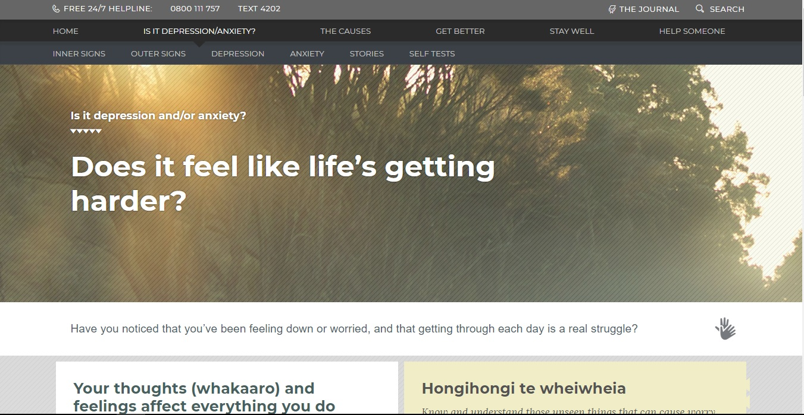
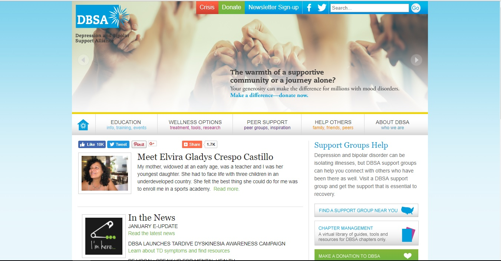

The first thing you notice when opening depression.org.nz for the first time is the dark color palate used throughout the whole website. The different shades of gray and white text give a calming feel to the site for people with depression to navigate through. The sans serif typeface and large size makes for good readability, and the animated background of the waves crashing onto a seashore add a soothing feel for the site visitor. The layout of the website is unique in the way that directly at the top of the page, there is a nav with the phone number for a 24/7 (depression) help service followed by a texting number and a navigation bar (scrolling down on the page makes the numbers disappear but they are placed in another section above the footer).
Under the bar is another navigation bar which links the other pages to the home page. When accessing them, a third bar appears underneath with links to specific information under each topic. The top two nav bars collapse as you scroll down the page. The separated and condensed form of the bars cleans the website so that the general user isn’t constantly overloaded with information. The footer however has a bunch of text links used to navigate all over the site and seems to be an information overload. Each page on the site has at least two columns worth of information, staggered in a zigzagging style. Each box of information corresponds to a link in the top navigation bar, and they have links to the separate pages of information. This allows for quick access and with a bit more of an information preview for each of the topics.
I find this website to have useful content tailored towards helping people with depression. The colors and stories help visitors feel calm and perhaps a bit better in coping with their mental issue. Overall, the interactivity within the website is also fun to look at, such as the arrows in the background which scroll with you as you move down any page on the site.
The Depression and Bipolar Support Alliance (DBSA) website is bright and full of colors, unlike the site above. This is perhaps to put visitors in a brighter, happier mood as they learn about ways to help deal with their mental disorder. The first thing that stands out is the interactive banner which automatically scrolls every few seconds. It shows information about other pages on the website, such as advice on how to deal with mental disorders and be able to take care of children at the same time or how to become an ambassador for the alliance. Right below the banner is a navigation bar which starts with the home page as a house icon, followed by general pages such as events, treatments, groups, and more. The navigation bar has smaller subtitles for its headers, making it easier for website visitors to navigate through the site.
The site is broken up into a header, a footer, and two columns. The main content of each page on the left column, with a navigation list on the right. The right-hand side navigation list changes content depending on the topic or page the user has clicked on, linking to more information on how to do certain things or where to find help. There is also a link on the right column to translate the site into Spanish, making it more accessible to a wider audience. The header on every page aside from the home page loses the interactive banner but keeps the nav bar and search bar at the top. The footer, which includes the DBSA’s mission and quick links to social media sites, has the same content on every page.
In my opinion, this site is easy to navigate, but has a lack of appeal to it. It isn’t as engaging as the site mentioned above, but it does have a lot of though it the placement of content. Some of the right-hand columns have too many links which start to stretch the column downward, and I think it could be further condensed for better navigation.
